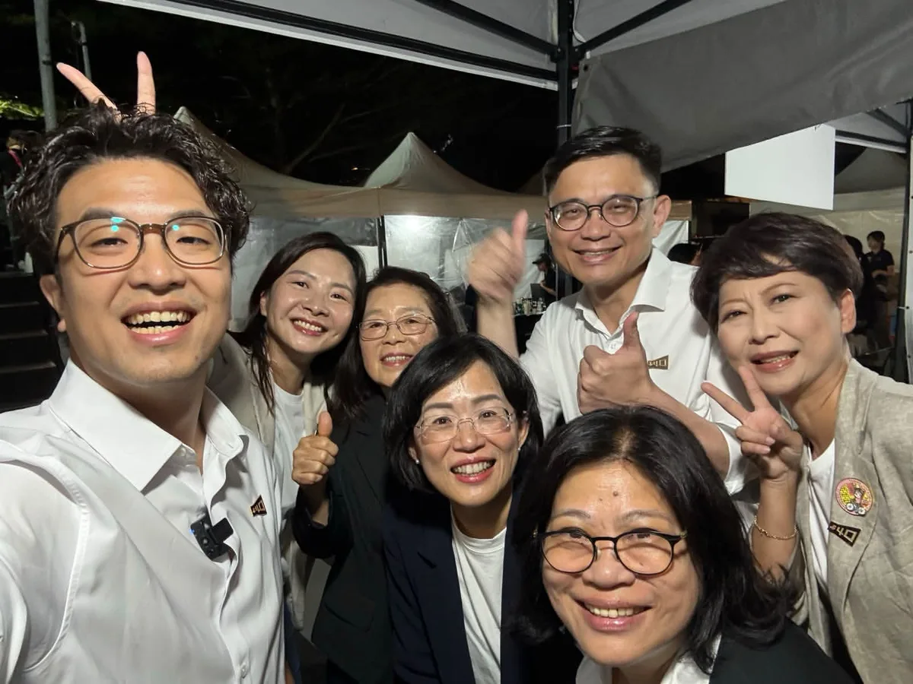

沈伯洋pumashen

@pumashen:謝謝學長帶我飛！ ⠀ 刈包有夠好吃 然後我人生第一次吃糖葫蘆 ⠀ 今天我們勇敢走進夜市 大家在夜市前就自動摩西分海 實在有夠厲害 ⠀ 謝謝大家的熱情 我愛中壢的大家！
Accounts
| 平台 | 帳號 | 已收錄貼文 | 最後更新 |
|---|---|---|---|
| 官網 | https://puma.taipei/ | 45 | 2026-09-16 00:00 |
| https://www.facebook.com/puma.taipei/ | 129 | 2026-09-19 22:08 | |
| https://www.facebook.com/pumashen/ | 64 | 2026-09-11 19:15 | |
| https://www.instagram.com/pumashen/ | 112 | 2026-09-20 15:34 | |
| Threads | https://www.threads.com/@pumashen | 154 | 2026-09-20 23:37 |
| YouTube | https://www.youtube.com/@PumaShen | 105 | 2026-09-20 23:08 |
| X | https://x.com/pumashen | 1 | 2026-09-09 12:49 |
| LINE 官方帳號 | https://join.puma.taipei/line/UkfBBgZ2 | 0 | — |
Timeline
顯示 610 / 610 則
@pumashen:謝謝學長帶我飛！ ⠀ 刈包有夠好吃 然後我人生第一次吃糖葫蘆 ⠀ 今天我們勇敢走進夜市 大家在夜市前就自動摩西分海 實在有夠厲害 ⠀ 謝謝大家的熱情 我愛中壢的大家！

週一早上，就是要去公園運動啊！ 大家明早見！ ⠀ 9/21 (一) 06:15 📍社子公園

陳慈慧 慈續服務 最貼心從孩子的通學安全到市民的健康，把每一件生活小事放在心上。讓專業、認真的人進入市議會，一起讓台北變得更好。11月28日，支持陳慈慧，也支持沈伯洋！

沈伯洋Ｘ王孝維 聯合競選總部成立！ ⠀ 我與 王孝維議員聯合競選總部成立了，來成立大會現場，感受到港湖鄉親滿滿的熱情，也看見溫暖的洋流，正持續匯聚、擴散。 ⠀ 孝維議員深耕港湖多年，熟悉地方、服務扎實，更是一位有遠見的議員。 ⠀ 從營養午餐、防災韌性，到港湖的交通、都更與產業發展，孝維議員總是提早看見問題、提出解方，持續在議會為地方把關。 ⠀ 台北要有新的方向，需要有願景的市長，也需要有遠見的議員。 ⠀ 請大家支持沈伯洋，也讓王孝維高票連任！ 讓我們從港湖出發，把溫暖的洋流帶到台北每一個角落，一起讓台北順起來、向前走！ ⠀ #聯合競選總部成立 #你的市長沈伯洋 #讓台北順起來

成德市場，是許多南港人的日常，也是鄰近忠孝院區醫護人員、病患家屬採買的重要去處。 ⠀ 和成德市場和攤商與鄉親問候，聽聽大家對市場未來的期待；也謝謝自治會杜樁松會長熱情接待。 ⠀ 從早年的臨時攤販，到市場整建、攤商搬遷，成德市場陪伴地方走過數十年。未來如要改建，除了讓市場更安全、乾淨、舒適，也一定要傾聽攤商與住戶的聲音，讓改建真正符合地方需要。 ⠀ 謝謝每一位熱情打氣的朋友，市場的人情味，就是台北最珍貴的城市風景！ ⠀ ＃台北順起來 ＃你的市長沈伯洋
周末行程來囉，一起來聊聊對於台北的想法吧！ 9/19（六） ⠀ 10:00 📍王孝維議員_聯合競總成立大會 內湖區金龍路196號（昇陽大地廣場） ⠀ 16:00 📍賴瑞隆市長候選人_洋流到港，隆捲風來襲 （高雄國軍英雄館前出發） ⠀ 18:30 📍民主進步黨創黨40週年音樂會 中正區北平東路30號 ⠀ 9/20（日） ⠀ 20:15 📍黃世杰市長候選人_中壢夜市


What Is Japan’s Experience with Setting Up Smoking Rooms? How Does Japan Consider Different Needs?
@pumashen:和每一位家長一樣，我希望孩子每天都能安心上學、平安回家。 ⠀ 但台北市交通死傷最集中的時段，正好與孩子上下學的時間高度重疊。 ⠀ 2024年，台北市交通事故造成29,079人受傷，其中17歲以下兒少死傷898人。上午7點至9點的死傷人數，更是全天最高峰。 ⠀ 前陣子訪美交流，我參訪了紐澤西州霍博肯市。這座城市從路口設計著手，已連續多年維持交通零死亡。 ⠀ 霍博肯市的經驗讓我看見，改善交通安全不只需要技術與經費，更需要長期推動的決心。只要願意從每一個路口做起，就能一步一步降低道路風險。 ⠀ 反觀台北，市府從2025年開始推動通學區規劃，至今卻只完成4個通學區。 ⠀ 面對全市150多所國小，這樣的進度遠遠不夠，各校也缺乏一致的設計與工程標準。 ⠀ 因此，我主張訂定「台北市通學區共同標準」，以學校周邊150公尺為原則，參考中央指引，編列專案預算並逐年檢討。 ⠀ 我的目標是，在八年內完成全市150多所國小的通學區建置，朝「通學區零死亡」前進。 ⠀ 我提出三項具體做法： ⠀

明天和大家相約市場、夜市見！ ⠀ 9/18 （五） ⠀ 09:00 📍成德市場 ⠀ 19:20 📍景美夜市（集合點：景美集應廟）

讓每一位乘客安心到站，從解決駕駛長過勞開始！ ⠀ 跑行程時，常有長輩跟我說，搭公車最怕兩件事：人還沒坐穩，公車就開了；招手慢了一點，公車就過站了。 ⠀ 很多人會覺得，是公車開太趕。但我們更該追問，究竟是什麼原因，讓駕駛長不得不這麼趕？ ⠀ 2025年，台北市區公車發生900件事故，造成529人受傷。至於，百萬公里有責肇事率，也從前一年的2.15件增加到4.02件，接近翻倍。 ⠀ 同一時間，聯營公車駕駛長人數從4,047人減少到3,918人；公車相關陳情則平均每天超過100件。 ⠀ 人力不足、班表太緊，開慢了可能脫班，也壓縮駕駛長原本就不多的休息時間。 ⠀ 長期處在疲勞和趕班的壓力下，不僅乘客不安心，駕駛長也承受著龐大的身心壓力。 ⠀ 為了讓市民安心出門、平安回家，我提出四項台北公車安全改革： ⠀ ▎補貼駕駛長薪資，增加招募誘因 ⠀ 我將啟動精算評估，由市府補貼駕駛長薪資，吸引更多人投入公車駕駛長工作。 ⠀ 也和工時、休息時間等其他勞動條件連動，讓班表更合理、休息真正落實。 ⠀ 同時，檢討現行依里程計算的補貼方式，避免業者為了增加里程，維持過長或重複的路線。 ▎駕駛座導入人因工程，減少行駛資訊干擾 ⠀ 現在的公車駕駛座，裝有盲點偵測、碰撞警示、防夾系統和監視器畫面。 ⠀ 雖然，每一項設備都有安全考量，但全部疊加在一起，也可能分散駕駛長的注意力。 ⠀ 我將評估導入工程，邀集駕駛長、工會及專業團隊，共同檢視設備，整合重複資訊，讓重要提醒更清楚，也容易操作。 ⠀ ▎折返點設置休息站，讓駕駛長有時間喘口氣 ⠀ 不少駕駛長跑完一趟，很快又要返程，連喝水、上廁所或坐下來休息都很困難。 ⠀ 市府應盤點重要折返點、調度站及公有空間，設置駕駛長休息站，提供座椅、飲水及如廁空間。 ⠀ 另外，班表也要保留足夠的休息時間，讓駕駛長跑完一趟，真的能停下來喘口氣，再安全上路。 ⠀ ▎重新整理公車路網，減輕駕駛長趕班壓力 ⠀ 依據各站、各時段的載客資料分析，與業者、市民充分討論，並分階段試辦，滾動調整！ ⠀ 低運量的路段或時段，可評估改用小型巴士或預約式服務。路線調整前，先盤點醫院、長照機構、學校及社福據點，確保不影響市民日常生活。 ⠀ 重建台北公車的安全與信任。我會從改善工作環境做起，讓駕駛長專心開車，把每位乘客平安送到站！ ⠀ #台北順起來 #你的市長沈伯洋

"The shortest shortcut is the long way 'round"—that has always been my motto

Real change for Zhongzheng and Wanhua isn't just a slogan; it's reaching every alley and every home!

Councilor Chen Tzu-hui cares deeply about everything from children's commuting safety to citizens...

士林北投，有山水、有溫泉，有傳統市場，也有正要發展的北士科。這裡有台北的歷史，也有台北的未來。 ⠀ 士林北投林世宗議員在士林北投服務快20年，謝謝他一路以來的幫助，從磺港溪、北投市場，到環境、社子島、北士科，長期站在地方第一線，最清楚居民真正需要的是什麼。在世宗議員北投後援會成立大會上，也看見許多鄉親一路相挺的力量，成為世宗議員繼續為地方打拚的最大動力。 ⠀ 未來北士科的科技紅利，我希望能真正回到地方，讓交通、住宅、生活機能一起跟上，也讓商圈、市場一起受惠。 ⠀ 我提出城市未來的新方向，世宗議員有深厚的地方經驗。把市政府與市議會的力量接起來，一起讓士林北投更好，讓台北順起來！ ⠀ #台北順起來 #你的市長沈伯洋

@pumashen:周末行程來囉，一起來聊聊對於台北的想法吧！ 9/19（六） ⠀ 10:00 📍王孝維議員_聯合競總成立大會 內湖區金龍路196號（昇陽大地廣場） ⠀ 16:00 📍賴瑞隆市長候選人_洋流到港，隆捲風來襲 （高雄國軍英雄館前出發） ⠀ 18:30 📍民主進步黨創黨40週年音樂會 中正區北平東路30號 ⠀ 9/20（日） ⠀ 20:15 📍黃世杰市長候選人_中壢夜市

@pumashen:設置吸菸室，日本的經驗是什麼？ 日本還考慮不同需求？

設置吸菸室，日本的經驗是什麼？日本還考慮不同需求？

和每一位家長一樣，我希望孩子每天都能安心上學、平安回家。 ⠀ 但台北市交通死傷最集中的時段，正好與孩子上下學的時間高度重疊。 ⠀ 2024年，台北市交通事故造成29,079人受傷，其中17歲以下兒少死傷898人。上午7點至9點的死傷人數，更是全天最高峰。 ⠀ 前陣子訪美交流，我參訪了紐澤西州霍博肯市。這座城市從路口設計著手，已連續多年維持交通零死亡。 ⠀ 霍博肯市的經驗讓我看見，改善交通安全不只需要技術與經費，更需要長期推動的決心。只要願意從每一個路口做起，就能一步一步降低道路風險。 ⠀ 反觀台北，市府從2025年開始推動通學區規劃，至今卻只完成4個通學區。 ⠀ 面對全市150多所國小，這樣的進度遠遠不夠，各校也缺乏一致的設計與工程標準。 ⠀ 因此，我主張訂定「台北市通學區共同標準」，以學校周邊150公尺為原則，參考中央指引，編列專案預算並逐年檢討。 ⠀ 我的目標是，在八年內完成全市150多所國小的通學區建置，朝「通學區零死亡」前進。 ⠀ 我提出三項具體做法： ⠀ ▎訂定全市統一標準，照顧每一位孩子 ⠀ 目前各校周邊的改善方式不一，有些地方只有標線，卻缺少行人庇護空間。 ⠀ 未來每所國小都應依照同一套安全標準，全面檢視路口淨空、抬升式行穿線、減速設施、行人庇護島及接送動線。 ⠀ 每所學校的環境不同，規劃時也要充分聽取校方、家長與居民的意見，因地制宜調整設計。 ⠀ ▎高風險路段優先，公開改善成果 ⠀ 通學區的改善順序，應根據近三年的事故與死傷資料決定，優先處理風險最高的學校周邊。 ⠀ 工程前後都要測量車速並公開結果，確認改善措施是否真的讓孩子過馬路更安全。 ⠀ 速限也可配合上下學時段調整，兼顧通學安全與周邊交通。 ⠀ ▎先試辦、再調整，八年完成全市建置 ⠀ 台北可以先從標線、彈性桿及花台等容易調整的設施開始試辦，確認成效並聽取居民意見後，再逐步完成永久工程。 ⠀ 同時配合道路刨鋪一併施工，加快改善速度，也避免重複施工。 ⠀ 孩子上學的路，不應該是一條需要冒險的路。 ⠀ 我會加快腳步，完成全市國小通學區建置，把每一條上學路照顧好，讓孩子安心上學、平安回家，也讓每一位家長更放心。 ⠀ #台北順起來 #你的市長沈伯洋

@pumashen:明天和大家相約市場、夜市見！ ⠀ 9/18 （五） ⠀ 09:00 📍成德市場 ⠀ 19:20 📍景美夜市（集合點：景美集應廟）
@pumashen:讓每一位乘客安心到站，從解決駕駛長過勞開始！ ⠀ 跑行程時，常有長輩跟我說，搭公車最怕兩件事：人還沒坐穩，公車就開了；招手慢了一點，公車就過站了。 ⠀ 很多人會覺得，是公車開太趕。但我們更該追問，究竟是什麼原因，讓駕駛長不得不這麼趕？ ⠀ 2025年，台北市區公車發生900件事故，造成529人受傷。至於，百萬公里有責肇事率，也從前一年的2.15件增加到4.02件，接近翻倍。 ⠀ 同一時間，聯營公車駕駛長人數從4,047人減少到3,918人；公車相關陳情則平均每天超過100件。 ⠀ 人力不足、班表太緊，開慢了可能脫班，也壓縮駕駛長原本就不多的休息時間。 ⠀ 長期處在疲勞和趕班的壓力下，不僅乘客不安心，駕駛長也承受著龐大的身心壓力。 ⠀ 為了讓市民安心出門、平安回家，我提出四項台北公車安全改革： ⠀ ▎補貼駕駛長薪資，增加招募誘因 ⠀ 我將啟動精算評估，由市府補貼駕駛長薪資，吸引更多人投入公車駕駛長工作。 ⠀ 也和工時、休息時間等其他勞動條件連動，讓班表更合理、休息真正落實。 ⠀ 同時，檢討現行依里程計算的補貼方式，避免業者為了增加里程，維持過長或重複的路線。

@pumashen:週一早上，就是要去公園運動啊！ 大家明早見！ ⠀ 9/21 (一) 06:15 📍社子公園

@pumashen:今天再度來到北投市場 有位弟弟找我PK陀螺 謝謝弟弟 我好久沒打陀螺了ಥ_ಥ

@pumashen:黨慶音樂會 我一路划回台北了，有點喘 聽說等等要唱歌？

@pumashen:每次簽名在名牌包上 我都會心頭一驚 這是可以簽的嗎？ 只能說幸好 我現在手比較穩了哈哈 還有人燙了 我好想念的「撲馬頭」 最狠的是簽拍照鏡頭 我很好奇 那以後拍照都會有沈伯洋嗎 謝謝大家今天的熱情 市場沒走完，明天繼續 謝謝大家 準備往高雄出發
周末行程來囉，一起來聊聊對於台北的想法吧！ ⠀ 9/19（六） ⠀ 10:00 📍王孝維議員_聯合競總成立大會 內湖區金龍路196號（昇陽大地廣場） ⠀ 16:00 📍賴瑞隆市長候選人_洋流到港，隆捲風來襲 （高雄國軍英雄館前出發） ⠀ 18:30 📍民主進步黨創黨40週年音樂會 中正區北平東路30號 ⠀ 9/20（日） ⠀ 20:15 📍黃世杰市長候選人_中壢夜市

設置吸菸室，日本的經驗是什麼？ 日本還考慮不同需求？

和每一位家長一樣，我希望孩子每天都能安心上學、平安回家。 ⠀ 但台北市交通死傷最集中的時段，正好與孩子上下學的時間高度重疊。 ⠀ 2024年，台北市交通事故造成29,079人受傷，其中17歲以下兒少死傷898人。上午7點至9點的死傷人數，更是全天最高峰。 ⠀ 前陣子訪美交流，我參訪了紐澤西州霍博肯市。這座城市從路口設計著手，已連續多年維持交通零死亡。 ⠀ 霍博肯市的經驗讓我看見，改善交通安全不只需要技術與經費，更需要長期推動的決心。只要願意從每一個路口做起，就能一步一步降低道路風險。 ⠀ 反觀台北，市府從2025年開始推動通學區規劃，至今卻只完成4個通學區。 ⠀ 面對全市150多所國小，這樣的進度遠遠不夠，各校也缺乏一致的設計與工程標準。 ⠀ 因此，我主張訂定「台北市通學區共同標準」，以學校周邊150公尺為原則，參考中央指引，編列專案預算並逐年檢討。 ⠀ 我的目標是，在八年內完成全市150多所國小的通學區建置，朝「通學區零死亡」前進。 ⠀ 我提出三項具體做法： ⠀ ▎訂定全市統一標準，照顧每一位孩子 ⠀ 目前各校周邊的改善方式不一，有些地方只有標線，卻缺少行人庇護空間。 ⠀ 未來每所國小都應依照同一套安全標準，全面檢視路口淨空、抬升式行穿線、減速設施、行人庇護島及接送動線。 ⠀ 每所學校的環境不同，規劃時也要充分聽取校方、家長與居民的意見，因地制宜調整設計。 ⠀ ▎高風險路段優先，公開改善成果 ⠀ 通學區的改善順序，應根據近三年的事故與死傷資料決定，優先處理風險最高的學校周邊。 ⠀ 工程前後都要測量車速並公開結果，確認改善措施是否真的讓孩子過馬路更安全。 ⠀ 速限也可配合上下學時段調整，兼顧通學安全與周邊交通。 ⠀ ▎先試辦、再調整，八年完成全市建置 ⠀ 台北可以先從標線、彈性桿及花台等容易調整的設施開始試辦，確認成效並聽取居民意見後，再逐步完成永久工程。 ⠀ 同時配合道路刨鋪一併施工，加快改善速度，也避免重複施工。 ⠀ 孩子上學的路，不應該是一條需要冒險的路。 ⠀ 我會加快腳步，完成全市國小通學區建置，把每一條上學路照顧好，讓孩子安心上學、平安回家，也讓每一位家長更放心。 ⠀ #台北順起來 #你的市長沈伯洋

@pumashen:幕僚傳回來：現場準備好囉 來寫下你對台北市的期待 跟我聊聊，你希望的台北 等等見

明天和大家相約市場、夜市見！ ⠀ 9/18 （五） ⠀ 09:00 📍成德市場 ⠀ 19:20 📍景美夜市（集合點：景美集應廟）

讓每一位乘客安心到站，從解決駕駛長過勞開始！ ⠀ 跑行程時，常有長輩跟我說，搭公車最怕兩件事：人還沒坐穩，公車就開了；招手慢了一點，公車就過站了。 ⠀ 很多人會覺得，是公車開太趕。但我們更該追問，究竟是什麼原因，讓駕駛長不得不這麼趕？ ⠀ 2025年，台北市區公車發生900件事故，造成529人受傷。至於，百萬公里有責肇事率，也從前一年的2.15件增加到4.02件，接近翻倍。 ⠀ 同一時間，聯營公車駕駛長人數從4,047人減少到3,918人；公車相關陳情則平均每天超過100件。 ⠀ 人力不足、班表太緊，開慢了可能脫班，也壓縮駕駛長原本就不多的休息時間。 ⠀ 長期處在疲勞和趕班的壓力下，不僅乘客不安心，駕駛長也承受著龐大的身心壓力。 ⠀ 為了讓市民安心出門、平安回家，我提出四項台北公車安全改革： ⠀ ▎補貼駕駛長薪資，增加招募誘因 ⠀ 我將啟動精算評估，由市府補貼駕駛長薪資，吸引更多人投入公車駕駛長工作。 ⠀ 也和工時、休息時間等其他勞動條件連動，讓班表更合理、休息真正落實。 同時，檢討現行依里程計算的補貼方式，避免業者為了增加里程，維持過長或重複的路線。 ▎駕駛座導入人因工程，減少行駛資訊干擾 ⠀ 現在的公車駕駛座，裝有盲點偵測、碰撞警示、防夾系統和監視器畫面。 ⠀ 雖然，每一項設備都有安全考量，但全部疊加在一起，也可能分散駕駛長的注意力。 ⠀ 我將評估導入工程，邀集駕駛長、工會及專業團隊，共同檢視設備，整合重複資訊，讓重要提醒更清楚，也容易操作。 ⠀ ▎折返點設置休息站，讓駕駛長有時間喘口氣 ⠀ 不少駕駛長跑完一趟，很快又要返程，連喝水、上廁所或坐下來休息都很困難。 ⠀ 市府應盤點重要折返點、調度站及公有空間，設置駕駛長休息站，提供座椅、飲水及如廁空間。 ⠀ 另外，班表也要保留足夠的休息時間，讓駕駛長跑完一趟，真的能停下來喘口氣，再安全上路。 ⠀ ▎重新整理公車路網，減輕駕駛長趕班壓力 ⠀ 依據各站、各時段的載客資料分析，與業者、市民充分討論，並分階段試辦，滾動調整！ ⠀ 低運量的路段或時段，可評估改用小型巴士或預約式服務。路線調整前，先盤點醫院、長照機構、學校及社福據點，確保不影響市民日常生活。 ⠀ 重建台北公車的安全與信任。我會從改善工作環境做起，讓駕駛長專心開車，把每位乘客平安送到站！ ⠀ #台北順起來 #你的市長沈伯洋